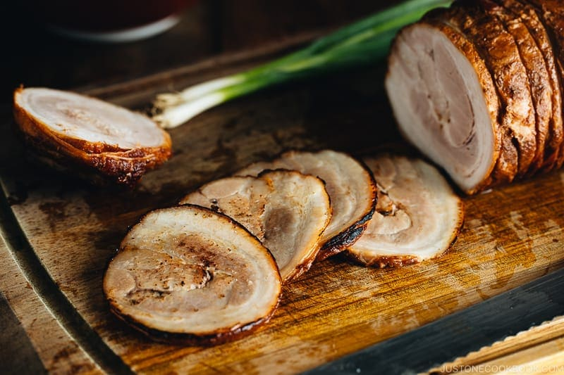

ChaShu Recipe

This melt-in-your-mouth Chashu recipe is quite easy to make at home. Braised low and slow in a sweet and savory sauce, these tender slices of pork belly can now top your next ramen or rice bowl. It’s the most fulfilling reward for any pork lover.
Ingredients
- Pork belly—1kg
- Scallion—3 pieces
- Ginger—10g
- Garlic—5 cloves
- Eggs—3 pieces
- Pork stock—500cc
- Onion—half
- Apple—half
- Sake—100cc
- Mirin—100cc
- Brown sugar—50g
- Crystal sugar—50g
- Soy sauce—200cc
- Garlic—5 cloves
Steps
- Prepare and Tie the Pork Belly
- Select a pork belly slab (2–2½ lb for a rolled log). Remove rind if present.
- Lay it meat-side up, then roll it into a neat cylinder, showing alternating layers of meat and fat.
- Tie butcher’s twine securely—start with a double-knot on one end, wrap the other end similarly, then run the twine along the length of the roll at ~1 cm intervals. Finish by knotting again in the middle.
- Sear the Pork
- Heat neutral oil (like vegetable or canola) in a cast-iron skillet or heavy-bottom pot over high heat.
- Sear all sides of the roll until browned evenly; this takes around 10–15 minutes.
- Make the Braising Liquid
- In a large pot, combine soy sauce, sake, mirin (or sugar), and water.
- Add aromatics: green onion, ginger (and optionally garlic or shallot).
- Simmer the Chashu
- Place the seared pork belly roll into the pot with the braising liquid.
- Bring to a gentle boil, skimming off any foam that rises to the surface.
- Cover with an otoshibuta (drop lid) or foil to press the meat down and prevent evaporation.
- Simmer on low heat for about 2 hours, turning every 30 minutes for even flavor absorption. Non-rolled blocks require only around 1 hour.
- Chill and Marinate
- After simmering, let the meat cool slightly.
- Transfer to a container or vacuum-seal bag, along with some braising liquid (typically ½ cup in a bag or a few cm in a container).
- Refrigerate overnight to let the flavors deepen.
- Slice and Finish
- Remove the tied chashu from the liquid, cut away the twine.
- Slice into ~6 mm (¼‑inch) thick pieces.
- Reheat by placing in hot ramen broth, pan-searing in leftover sauce, or torch-searing for an aburi chashu finish.
Home